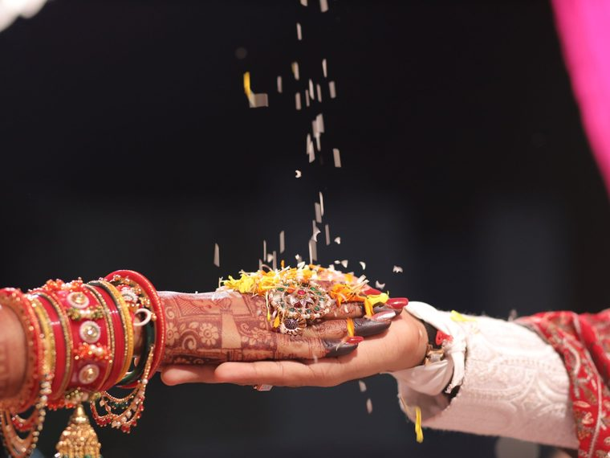

Planning
Indian wedding budget: where the money actually goes

Shaadi ka budget kitna rakhein? By the end of the first chai, every family has an answer. By the third week, the answer has acquired a fufaji, two cousins and a strong opinion about the mithai.
An Indian wedding budget holds up when it is built in one order: settle the real guest number first, then the venue and the food, and let everything else fit into what is left. Every other line is a multiple of the guest count, which is why a budget that begins anywhere else slowly drifts. Do it early, alongside a wedding timeline that holds up, because the two keep nudging each other.
What does an Indian wedding budget get spent on?
Start with the national picture, because it corrects the assumption most families carry in. For this season — roughly 52 lakh weddings between 21 November and 15 December 2026 — the Confederation of All India Traders puts total business at about ₹7.5 lakh crore. Jewellery takes around ₹1.2 lakh crore, garments ₹90,000 crore, catering ₹75,000 crore, and hotels, banquet halls and venues about ₹60,000 crore.
Read that order again. Across the country, families spend more on what people wear and carry home than on the ground they stand on. The venue is rarely the biggest line. It only feels like it, because it arrives in two or three large instalments you can see, while everything else slips out in forty small ones you cannot.
Your own hisaab-kitaab, the accounts, will not match those proportions and does not need to. What it should match is the shape: which lines move, and where there is real give.
| The line | Where the give actually is |
|---|---|
| Catering | The menu, and the number of functions fed — rarely the number of plates |
| Venue | The date and the day of the week, far more than the hall |
| Clothes and jewellery | Entirely yours to decide; no vendor sets this one |
| Decoration | Fewer and larger arrangements, and fewer hours of lighting |
| Photography | The number of days covered, not the quality of who covers them |
| Rooms and transport | Where outstation guests stay, not how far they have come |
What makes the wedding cost in Varanasi climb — or quietly fall?
Four things move the meter, roughly in this order:
- The muhurat. The auspicious nights are the dearest evenings of the year in any city, and this season runs hard at the calendar before the Kharmas pause in mid-December. The same evening, a fortnight off the rush, is a gentler conversation.
- Kitne log aayenge. Not the invitation list — the number of people actually standing on the ground at nine. Every rupee per plate is multiplied by it, twice if lunch is also on the menu.
- How many addresses the wedding lives at. Haldi at home, mehendi at a cousin's, sangeet in one hall and the pheras somewhere else means four setups, four decor bills and a lot of tempo hire. Five functions on one ground is a single setup, re-dressed as the days turn.
- What the sky is being asked to do. An open lawn in late December needs warmth, or a hall standing by, and both are real lines in the sheet. It is a budget question as much as a style one, which is why it pays to settle between an open lawn and an indoor hall before the quotes arrive.
How should the venue and the food be quoted?
As one number per guest — and then ask what that number leaves out. The distance between a cheap quote and an honest one usually lives in the second answer.
- Is the per-plate rate inclusive of tax, or is tax added at the end?
- How many hours does the booking cover, and what happens after midnight?
- Are generator hours, lighting and staff inside the price or outside it?
- What counts as a separate function — and is the next day priced again?
- What is the advance, and what happens if the date moves?
The fourth question matters more than it looks. A nikah followed by the walima the groom's family hosts, or a wedding and a reception on consecutive evenings, means two caterings and two setups, not one with an extra. Put it in the plan in week one rather than week twelve.
Which costs do families forget?
Never the big ones. A budget seldom breaks on the hall or the caterer; it breaks on the dozen small things nobody wrote down.
- Rooms for the outstation family who arrive two days early and leave a day late.
- The guests who were never on the list. The list is a wish; the gate is the truth.
- Lighting, sound and generator running three hours past the hour anyone planned for.
- Chai and meals for your own vendors — the band, the crew, the drivers.
- Shagun envelopes and small courtesies, which are not small once multiplied by the family.
- Tax, when the quote was given to you before it.
How do you trim a budget without anyone noticing?
By trimming what guests never experience, which is a longer list than families fear.
Cut the guest list before you cut the plate: fifty fewer people saves more than a thinner menu for everyone, and nobody at the wedding can taste the difference. Move the date before you move the menu. Keep the functions on one ground rather than four, so you dress the space once. Ask for fewer, larger flower arrangements instead of a thin layer of marigold everywhere — it photographs better and costs less. And put the money where people stand and where the camera goes: the entrance, the stage, the dining area.
A budget is a promise you make to your future self, usually on a tired Sunday night. The good ones are the ones where somebody wrote down who pays for what, and by when.
The rest is jugaad, and Indian families have more of it than they give themselves credit for.
City Garden has an open marriage lawn and an indoor banquet hall on one ground at Andhrapull, Chaukaghat — the arrangement that stops a budget paying for the same decor four times. Wedding catering and decoration in Varanasi are handled in house, vegetarian and non-vegetarian, with one point of contact for the venue, the food and the stage. If you would like figures for your own date and guest number rather than an average, tell us the date and we will quote it.
Planning your own date at a marriage lawn in Varanasi?
Check if your date is free